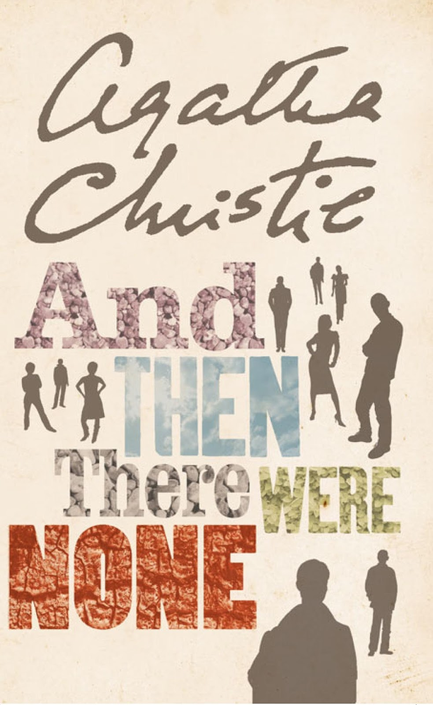

Review
"And Then There Were None" by Agatha Christie

And Then There Were None” by Agatha Christie is not only one of the author’s most memorable works, but also one of the finest suspense novels I have ever read. The narrative is gripping from beginning to end and disproves the notion that Christie’s writing is predictable or slow. On the contrary, the story compels the reader to form theories, distrust every character, and attempt to unravel the mystery before the final revelation — which ultimately subverts expectations and delivers a stunning conclusion.
I highly recommend this book not only to fans of the genre, but also to those who have never explored it before. This novel clearly demonstrates why Agatha Christie is regarded worldwide as one of the greatest masters of suspense.
If you’re interested in reading And Then There Were None in English, you can easily purchase it online. It’s available on Amazon, which offers various editions of this classic mystery novel by Agatha Christie, including paperback versions in the original language.
Link Amazon